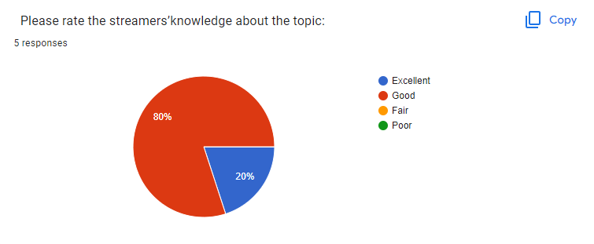
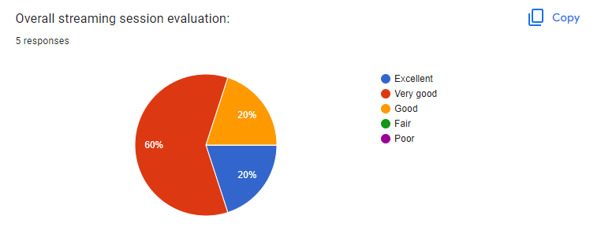

After the stream, the total views/clicks was 46, slowly rising while the stream went on.
Our average on our chat rate was 0, 10 messages sent being the highest on around 5:45pm to 5:50pm.
Our average concurrent viewers was 2, 8 being the highest happening from around 5:25pm all the way to around 5:40pm.
The entire stream's length was 1:14:47 and our overall watchtime is 6:45:57, 8:49 being our average.
During and after the stream, we told the viewers to answer our streaming feedback evaluation survey to give us feedback on what to improve on. Here are the results:
60% of our viewers said that the information gotten from our stream was relatively old.
40% of our viewers said they can use our info immediately while the other 40% said they can use our info never.
80% of our viewers wants to know more about our topic.
40% of our viewers said that our stream content isnt relevant to address solutions, issues, or challenges in our lives
while the other 40% said that our stream content can maybe address solutions, issues, or challenges in our lives.
We had done well on the “streamer’s ability to engage” and “our design content” questions by over
60% of them choosing the “Excellent” option while the other 40% chose “Good” or “Fair”.

Our platform venue (YouTube) was deemed “Good” by all of our viewers according to the survey held.
The “streamer’s knowledge” question has been said to be “Good” by 80% of our viewers.
The duration of our stream was perceived to be “Good” by 80% of our viewers.

The stream was half-accurate to our stream outline as 60% of our viewers gave “Good” as their answer in the “accuracy of the stream outline” question.
Our stream was well-received by our viewers as 60% of them had inputted “Very Good” as their verdict in the “expectations” and “overall evaluation” questions.
Our stream will most likely to be recommended to other people as most have voted more than 5 on the "recommendation" question.
Our suggestions to improve are:
- Have more engagement with the viewers,
- Have a private streaming room, and;
- Have a less cluttered stream design, especially on the "game only" part.
Overall during the stream, it gave us a positive impression towards our viewers. The survey respondents stated that our content was
well delivered by our streamer and had answered Fair to Excellent remarks in our survey. Our overall stream performance from
our YouTube analytics and our survey results showed that our viewers had fun on our stream and that they will hopefully be
promoting it to others so that they too can have fun.